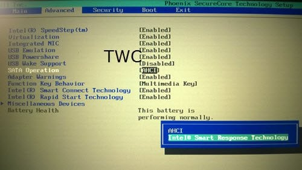

UNEXPECTED_KERNEL_MODE_TRAP
Este error es causado por una falla que el kernel del sistema no puede identificar, las causas mas comunes son una falla de hardware o un controlador incompatible.
Es necesario localizar las causas probables de este error. Problemas como componentes polvorientos, hardware o software defectuoso, archivos de sistema corruptos, incompatibilidad de controladores, etc. Incluso si encontrar la causa del problema es imposible, se puede probar todas las soluciones a continuacion hasta que es problema este resuelto.
Compruebe el hardware o software recién instalado
Si ha instalado un nuevo Hardware o Software en su ordenador, esto puede ser la causa de este error. La razón principal puede ser la incompatibilidad entre los componentes del ordenador.
En el caso del software, es posible que no esté soportado oficialmente para Windows 10 y que funcione en modo de compatibilidad. Mientras que en el caso del hardware, puede no ser compatible con el otro hardware o, en algunos casos, el hardware puede ser tan antiguo que los controladores de ese componente de hardware pueden no ser compatibles con el propio sistema operativo.
También puede desconectar todos los dispositivos externos como impresoras, escáneres, unidades USB, etc. y, a continuación, reiniciar el equipo. A continuación, añada los dispositivos uno tras otro y compruebe si alguno de ellos le proporciona la pantalla azul.
Actualizar los controladores de dispositivo
Existe una gran posibilidad de que los controladores instalados en su ordenador no sean compatibles con Windows 10. Actualizar sus controladores no es difícil. Simplemente diríjase al Administrador de dispositivos para actualizarlos.
Se recomendado que actualice sus controladores de gráficos, controladores de red, controladores de chipsets y controladores de dispositivos de entrada.
Utilice la herramienta de diagnóstico de memoria para comprobar la RAM
El uso de la herramienta de diagnóstico de memoria es bastante sencillo. En primer lugar, guarde todo su trabajo importante.
A continuación, pulse WINKEY + R para abrir la ventana Run . Ahora, escriba el comando mdsched.exe en la ventana Ejecutar. Luego, reinicie su ordenador.
Desactivar el almacenamiento en caché de memoria en el BIOS
Para desactivar el almacenamiento en caché de la memoria en el BIOS, abra la pantalla de configuración del BIOS.
A continuación, navegue a Memoria caché y deshabilítela. Guarde los cambios y reinicie su ordenador.

Usar el Comprobador de Archivos del Sistema
Busque cmd en el cuadro de búsqueda y ejecutelo como administrador. 
Escriba el siguiente comando sfc /scannow y luego presione Enter.
Reinicie el sistema después de completar el análisis.
Limpiar manualmente el polvo del hardware
También puede intentar limpiar el polvo de los componentes del ordenador. Recomendaría usar aire comprimido. Asegúrese de no dañar las piezas con humedad ni dañar los circuitos durante la realización de esta tarea. Asegúrese de hacerlo con mucho cuidado. Porque incluso un pequeño moretón puede hacer que su computadora deje de funcionar y puede causarle gastos financieros. Si no está seguro, puede consultarle a un técnico calificado.